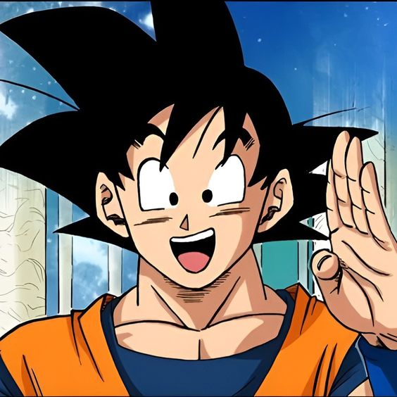
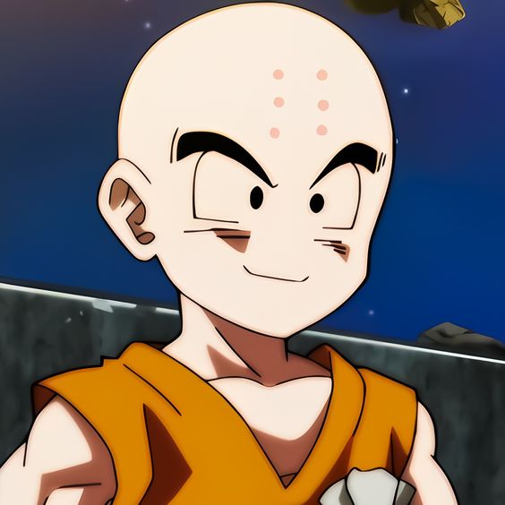
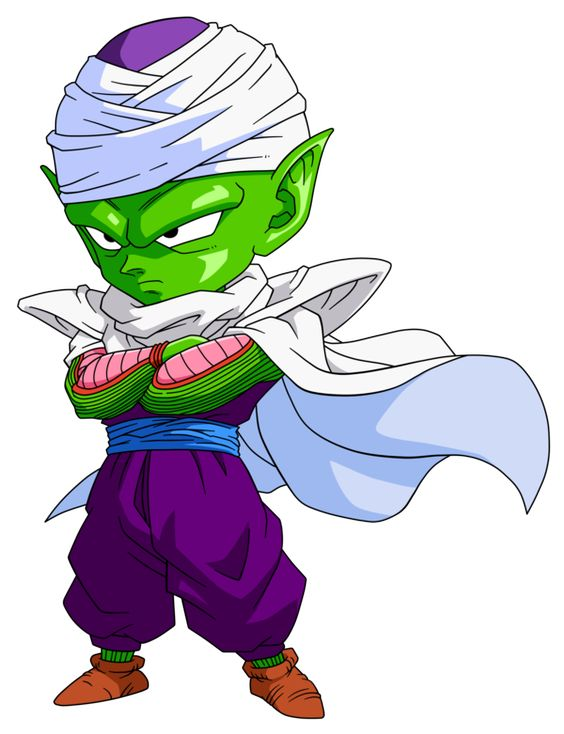
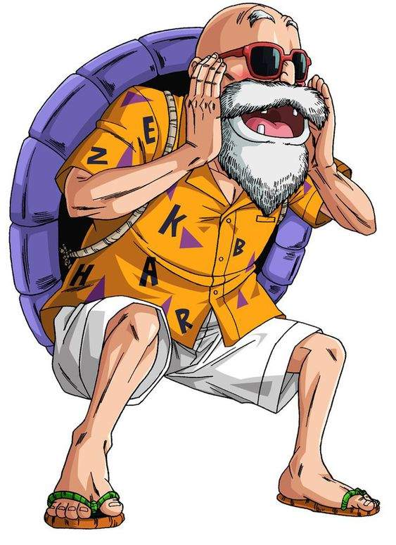
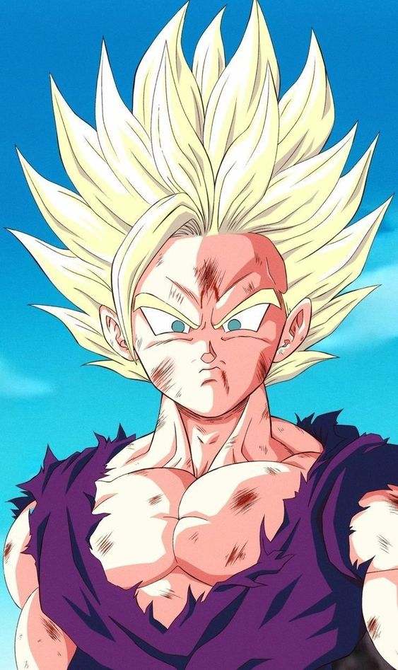
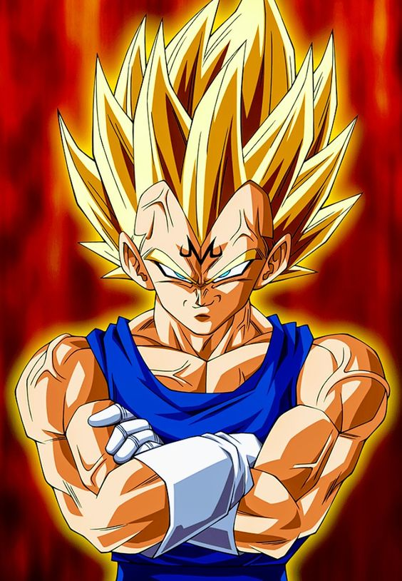

-
Son goku
Descrição
Son Goku, cujo nome de nascimento é Kakarotto, é o protagonista da franquia Dragon Ball, criada por Akira Toriyama. Sua primeira aparição ocorreu no primeiro capítulo do mangá Dragon Ball, intitulado Bulma e Son Goku, publicado na revista Weekly Shōnen Jump em 3 de dezembro de 1984.
-
kuririn
Descrição
Kuririn é um dos personagens principais da franquia Dragon Ball, criada por Akira Toriyama. Kuririn foi criado para prolongar a história e Akira pretendia descartá-lo rapidamente, mas sua popularidade cresceu e ele foi mantido; se tornando o segundo personagem com o maior número de aparições até o final do mangá.
-
Picolo
Descrição
Piccolo (ピッコロ Pikkoro?) é um personagem fictício da franquia Dragon Ball, de Akira Toriyama. Piccolo faz sua primeira aparição como a reencarnação do vilão Piccolo Daimaoh no capítulo 167 do mangá, O problema no Tenkaichi Budokai (波乱の天下一武道会 Haran no Tenkaichi Budōkai?) publicado originalmente em 1988 na revista Weekly Shonen Jump,[3] fazendo dele um demônio e rival do protagonista da série, Goku.
-
mestre kame
Descrição
Mestre Kame (亀仙人 Kame-Sen'nin?), também conhecido no mangá como Muten Roshi (em Portugal, Mestre Roshi ou muitas vezes chamado por Tartaruga Genial) é um personagem e protagonista de suporte da franquia Dragon Ball. Apresentado como um eremita e mestre das artes marciais, ele é o líder da Escola da Tartaruga onde ensina seus alunos a adquirirem força, velocidade e resistência através de grandes cascos de tartaruga que são presos às suas costas.
-
son gohan
Descrição
Son Gohan (孫 悟飯 Son Gohan?), também conhecido apenas como Gohan, é um personagem fictício da franquia Dragon Ball criado por Akira Toriyama. Ele aparece na segunda parte do mangá, que corresponde ao anime Dragon Ball Z. Gohan é filho do protagonista Goku com sua esposa Chi-Chi e o primeiro híbrido entre humano e Saiyajin mostrado na série, seu nome é uma homenagem ao avô adotivo de seu pai, Son Gohan que foi aluno de Mestre Kame, assim como Goku. Um tema recorrente na série é o grande poder oculto de Gohan, que aos poucos é liberado.
-
vegeta
Descrição
Vegeta (ベジータ Bejīta?) é um personagem fictício da franquia Dragon Ball criado por Akira Toriyama. As primeiras aparições de Vegeta na franquia foram no mangá Sayōnara Son Gokū (さようなら孫悟空 Adeus Son Goku?), publicado originalmente em 1988, e no quinto episódio do anime Dragon Ball Z, como o príncipe da raça praticamente extinta de guerreiros alienígenas, chamados Saiyajins. Vegeta foi um dos primeiros antagonistas da série, visando utilizar o poder das esferas para obter imortalidade e domínio sobre toda a galáxia. Após o surgimento de inimigos em comum, Vegeta escolhe a formar uma aliança com os protagonistas da série. Com o tempo, ele se torna um aliado fiel ao personagem principal da série, Son Goku. Vegeta é conhecido por seu poder inacreditavelmente forte, por seu comportamento arrogante e orgulhoso, e principalmente por sua rivalidade com Son Goku.